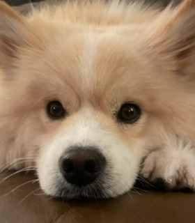

Honoring SaayaA life full of love, remembered through giving.
A memorial with purpose
More Wags.
Brighter Days.
Saaya’s Toy Box connects generous people with shelters, rescues and dog-focused organizations that need toys, treats and enrichment. Organizations tell us what would help. Donors choose a real need. We make the match.
♥
In loving memory of Saaya. Every match carries forward the play, comfort and happiness she brought into the world.

🐾
THE IDEAMatch joy to a real need.
Inspired bySaayaHer joy lives on in every Toy Box.
Toys. Treats. Hope.Useful gifts that bring comfort, play and enrichment.
Connecting HeartsDonors matched directly with organizations’ real needs.
Visible ImpactEvery fulfilled request has a clear destination.
The matching model
Not another donation page. A clear link between need and gift.
Organizations publish what would genuinely help the dogs in their care. Donors choose a need they want to fill. Saaya’s Toy Box makes the connection visible, practical and personal.
Matching board — concept preview
Example needs
Enrichment
12 / 20Durable puzzle toys
Requested for dogs spending extended time in kennel care.
8 still needed60% matched
Treats
28 / 40Training treats
Small, soft treats for positive reinforcement and enrichment sessions.
12 still needed70% matched
Play
6 / 15Medium tug toys
For supervised play, decompression and interaction with volunteers.
9 still needed40% matched
An organization asks
They share specific supplies, quantities and any important requirements.
The need is reviewed
Requests become clear, donor-friendly listings rather than vague wish lists.
A donor chooses
Individuals or businesses select something they genuinely want to support.
The request closes
Once fulfilled, the need disappears — reducing excess and duplicate donations.
Ask for what your dogs actually need.
Shelters, rescues, foster groups and community programs can submit focused requests for toys, treats, enrichment or other approved dog supplies.
Specify item type, quantity, size or dietary requirements
Keep requests current as needs change
Close requests automatically when fulfilled
Know exactly where your gift is going.
Choose a need instead of guessing. A small gift can feel more meaningful when the destination, purpose and remaining need are clear.
Browse by need rather than by charity alone
Support one item, several items or an entire request
See when a request has been fully matched

In loving memory
Saaya is the reason this exists.
Saaya’s Toy Box is built around something beautifully simple: dogs find enormous joy in small things — a favorite toy, a good treat, a moment of play, something familiar to settle beside.
Her name stays on every match, turning remembrance into something another dog can feel.
The full story of Saaya can live here in your own words — personal enough to make the mission unforgettable, restrained enough to preserve the dignity and professionalism of the project.
Saaya’s Toy Box · A memorial with purpose
Designed for trust
Professional enough for organizations. Personal enough for donors.
The model becomes stronger when every participant can understand what is needed, what has been matched and when a request is complete.
◎
Specific requests
Organizations ask for concrete items rather than receiving boxes of things they cannot use.
↗
Visible fulfillment
Donors can see the remaining need and know when a request is fully matched.
◇
Thoughtful curation
Requests can be reviewed before publication to keep the experience credible and useful.
Let one good memory create another.
Match a toy, treat or enrichment gift to a dog organization that can put it to immediate use — and let Saaya’s joy keep moving forward.